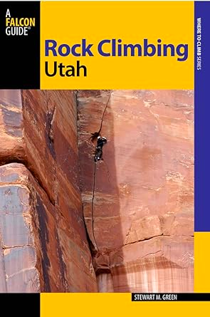
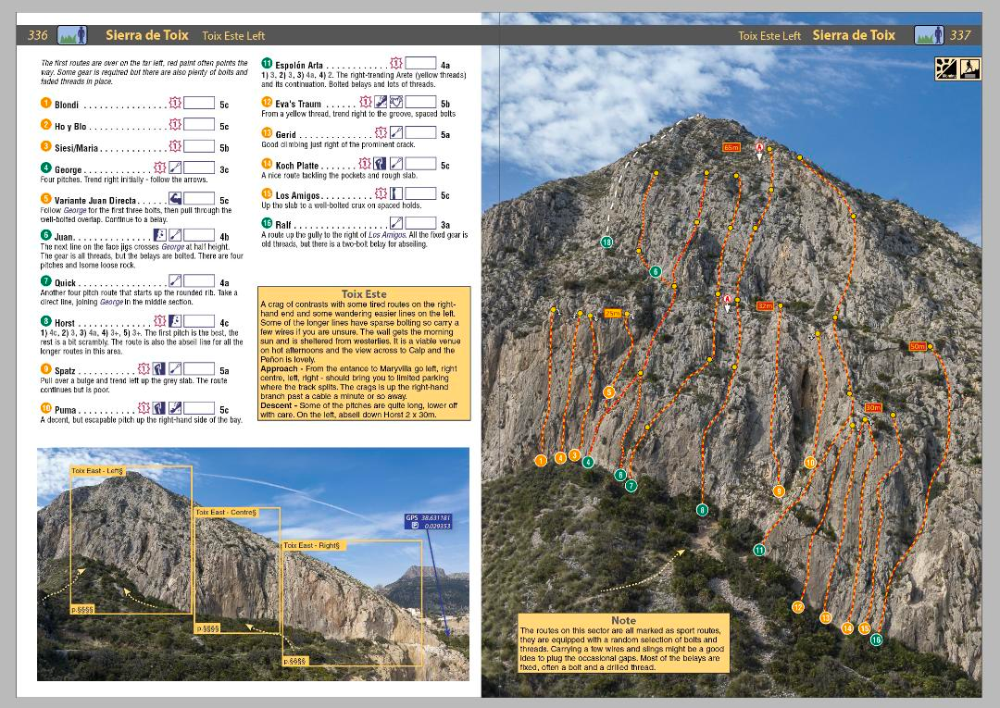
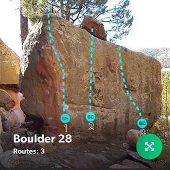

How do climbers know where to climb?
- Climbing guidebooks are used by rock climbers to find the location of climbing routes at crags or on mountains and their grade of difficulty
- Many guidebooks also offer condensed information about local restaurants, bars, and camping areas; often include sections on geology and local climbing history; and may contain many pictures to inspire climbers.
- Route descriptions typically include information about the length of a route and its grade (difficulty). The description can also include varying amounts of information about how to climb the route, such as the location of the crux, special techniques needed, and amount and type of gear needed. When this information is very detailed it is collectively known as beta



Previous | Next